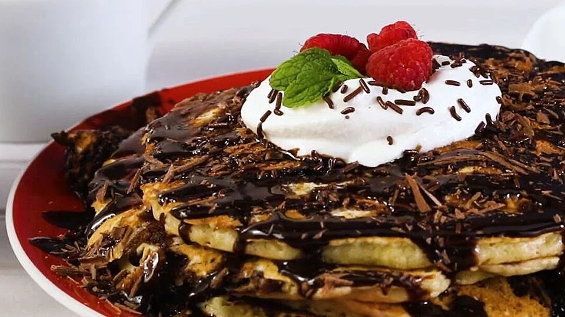

Brookie Pancakes Recipe

Description
This brookie pancake recipes has a prep time of 20 min
and a cooking time of 31 mins, which makes in total a 56 mins recipe, with 6 servings.
Per saving: 749 calories; protein 10.4g; carbohydrates 93g; fat 40g; cholesterol 104.8mg; sodium 747.9mg.
Ingredients
Pancakes
- 1 cup all-purpose flour
- 2 tablespoons white sugar
- 1 teaspoon baking powder
- ½ teaspoon baking soda
- ½ teaspoon salt
- 1 cup buttermilk
- 1 egg, beaten
- 2 tablespoons butter, melted
- 1 teaspoon vanilla extract
- ¼ cup semisweet chocolate chips
Brownie Swirl
- 1 (18.25 ounce) package brownie mix (such as Betty Crocker®)
- ½ cup vegetable oil
- 2 eggs
- ¼ cup water